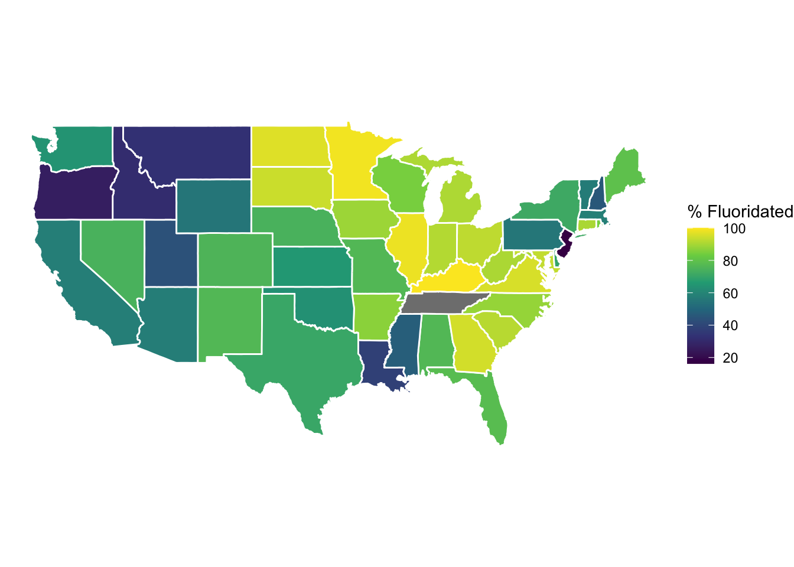
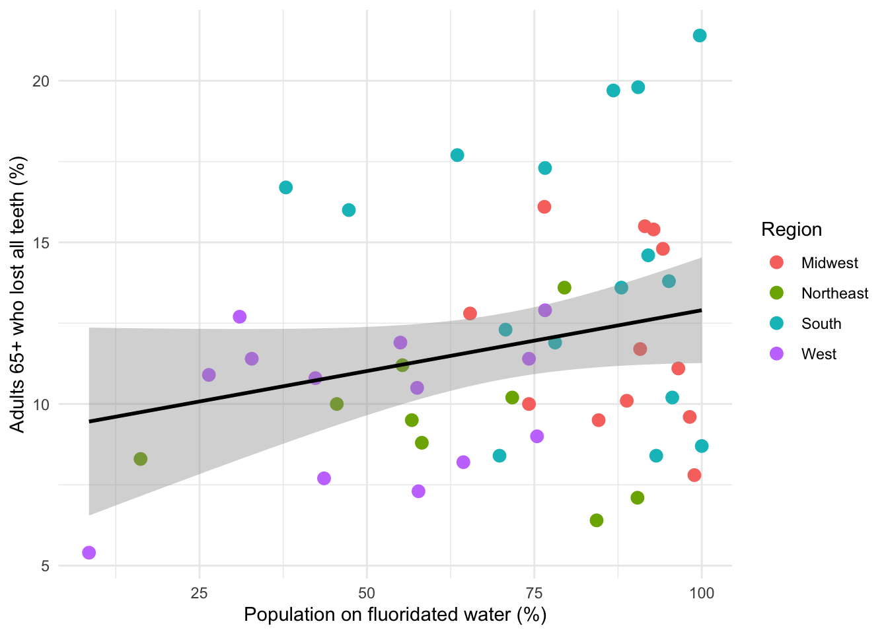
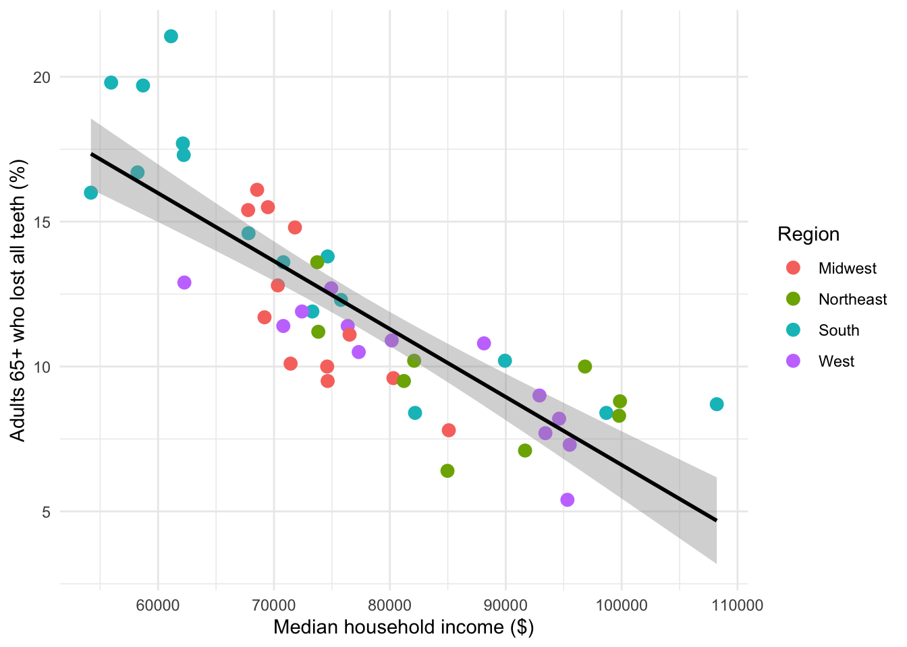
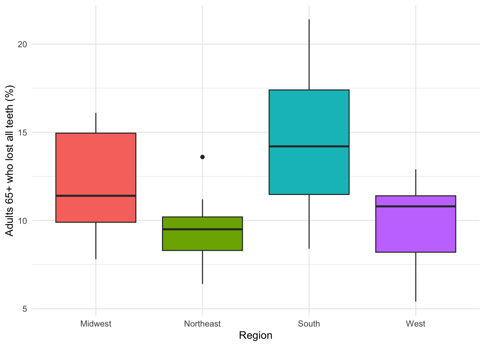

Community water fluoridation is when cities add a small amount of fluoride to the public drinking water to help prevent cavities. It started back in 1945, and since then most of the U.S. has gotten used to it being in their tap water.
I picked this topic because it’s been in the news a lot lately. In 2025, Utah became the first state to ban fluoride in public drinking water, and Florida followed soon after. Since I live in Utah and I’m planning on going to dental school, I was curious if fluoride actually makes a difference in people’s teeth, or if other things matter more.
Do states where more people drink fluoridated water have lower rates of tooth loss in older adults?
Going into this, I expected states with more fluoride to have less tooth loss.
I combined four public data sets by state:
| Variable | Description | Source |
|---|---|---|
pct_fluoridated |
% of people who get fluoridated tap water (2022) | CDC |
pct_teeth_lost |
% of adults 65+ who have lost all their teeth (2024) | CDC BRFSS / America’s Health Rankings |
pct_dental_visit |
% of adults who went to the dentist in the past year (2024) | CDC BRFSS / America’s Health Rankings |
median_income |
Median household income (2023) | U.S. Census Bureau |
## Making a U.S. map
map_data("state") %>%
left_join(dat %>% mutate(region_lower = tolower(state)),
by = c("region" = "region_lower")) %>%
ggplot(aes(x = long, y = lat, group = group, fill = pct_fluoridated)) +
geom_polygon(color = "white") +
coord_quickmap() +
scale_fill_viridis_c(name = "% Fluoridated") +
theme_void()
Most of the Midwest and South have over 80% of people on fluoridated water, but some states like Hawaii, New Jersey, and Oregon are way lower. I was surprised that Utah was only at 44% even before the ban.
dat %>%
ggplot(aes(x = pct_fluoridated, y = pct_teeth_lost)) +
geom_point(aes(color = region), size = 3) +
geom_smooth(method = "lm", color = "black") +
labs(x = "Population on fluoridated water (%)",
y = "Adults 65+ who lost all teeth (%)",
color = "Region") +
theme_minimal()
This was not what I expected. There’s barely any relationship, and the line actually goes slightly up.
dat %>%
ggplot(aes(x = median_income, y = pct_teeth_lost)) +
geom_point(aes(color = region), size = 3) +
geom_smooth(method = "lm", color = "black") +
labs(x = "Median household income ($)",
y = "Adults 65+ who lost all teeth (%)",
color = "Region") +
theme_minimal()
Income had a much stronger relationship. States with higher incomes had a lot less tooth loss.
dat %>%
ggplot(aes(x = region, y = pct_teeth_lost, fill = region)) +
geom_boxplot() +
labs(x = "Region", y = "Adults 65+ who lost all teeth (%)") +
theme_minimal() +
theme(legend.position = "none")
The South has a lot of fluoride but the most tooth loss, and it also has the lowest incomes. I think that’s why the fluoride line went up.
mod1 = glm(pct_teeth_lost ~ pct_fluoridated, data = dat)
mod2 = glm(pct_teeth_lost ~ median_income + pct_dental_visit, data = dat)
mod3 = glm(pct_teeth_lost ~ pct_fluoridated + median_income + pct_dental_visit, data = dat)
compare_performance(mod1, mod2, mod3, rank = TRUE)## # Comparison of Model Performance Indices
##
## Name | Model | R2 | RMSE | Sigma | AIC weights
## --------------------------------------------------
## mod2 | glm | 0.766 | 1.753 | 1.808 | 0.605
## mod3 | glm | 0.771 | 1.733 | 1.807 | 0.395
## mod1 | glm | 0.059 | 3.513 | 3.586 | 1.31e-15
##
## Name | AICc weights | BIC weights | Performance-Score
## -----------------------------------------------------
## mod2 | 0.660 | 0.800 | 99.68%
## mod3 | 0.340 | 0.200 | 73.62%
## mod1 | 1.72e-15 | 4.50e-15 | 0.00%I don’t think this proves fluoride doesn’t work. I used state-level data and looked at adults 65+, but fluoride mostly helps kids. If I did this again, I’d look at kids’ cavity rates in Utah and Florida before and after the bans.